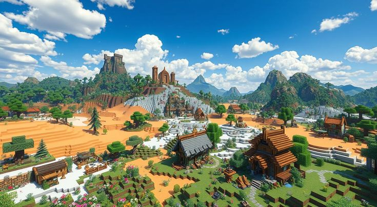

Estruturas do Minecraft
Publicado em: 29 de Abril de 2025

Descubra as diversas estruturas que você pode encontrar e construir no mundo de Minecraft.
Vilas
Uma cidade cheia de casas e locais de trabalho habitada por aldeões com profissões aleatórias e até dois golems de ferro defendendo a vila. São construídos com uma grande variedade de materiais, dependendo do bioma em que são gerados. Embora os edifícios das vilas não tenham variantes para os biomas de selva e pântano, os aldeões usam roupas diferentes quando geram nesses biomas.
Templos do deserto
Grandes edifícios de arenito contendo quatro baús com saques em uma sala subterrânea escondida sob a dinamite. Os baús são presos com dinamite que detona quando uma placa de pressão de pedra no centro é pisada, destruindo os baús e seu conteúdo. Às vezes chamado de Pirâmide do deserto.
Cidade ancestral
Longos corredores feitos de ardósia e lã, conectando-se a um edifício central com uma estrutura em forma de portal feita de ardósia reforçada. A estrutura central lembra um defensor. Pequenas ruínas podem ser encontradas espalhadas pela cidade ancestral contendo baús com itens dentro. Como essa estrutura é gerada no bioma de profundezas sombrias, contém muitos emissores de sculk e catalisadores.
Fortaleza do nether
Uma grande estrutura de tijolos do nether que gera esqueleto wither e contém geradores de criaturas de blaze.
Bastião em ruínas
Estruturas grandes, tipo castelo com habitação para piglins, hoglins, e cubos de magma.
Cidade do end
Torres amplas e conectadas, construídas com púrpura, Tijolos de pedra do End e Vidro roxo. Eles são habitados por shulkers que guardam valiosos baús e podem gerar um Barco do End contendo um par de élitros.
Câmaras do desafio
Uma grande estrutura subterrânea feita de blocos relacionados a cobre e tufo, apresentando o gerador do desafio e cofre. É o único lugar onde a criatura vórtice é encontrada.